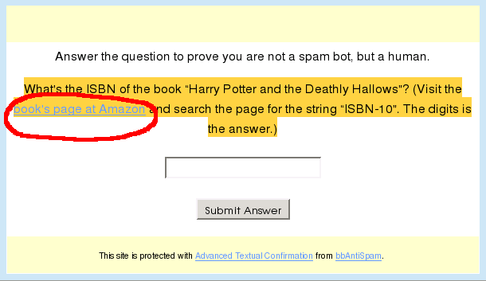

The evil idea again, now with the screenshot and with Harry Potter quiz
The post “Evil Idea: Make money from spammers!” has raised a number of comments. The intermediate verdict is: “A bad idea if put into practice, not a bad idea in theory”. Probably I know the first step to refactor the idea. Let’s try this way:

The question on screenshot is:
What’s the ISBN of the book “Harry Potter and the Deathly Hallows”? (Visit the book’s page at Amazon and search the page for the string “ISBN-10”. The digits is the answer.)
And yes, the link is affiliate! If 80% of your visitors are spammers, they’ll visit Amazon and maybe buy something.
As long as Amazon doesn’t care how you redirect the visitors, you are happy. Unfortunately, I think it’s against theirs Terms of Service.
The second main problem is that this approach disturbs good visitors.
Personally, I care about the visitors more than about the terms of service. Therefore, I don’t consider this isbn-question seriously.
But if your site is devoted to Harry Potter, why not to reformulate the question?
Who is the best friend of Harry Potter? (Read the book if you don’t know!)
In my opinion, the good visitors will easily pass the question.
Such approach can work for any thematic forum.
What do you think?